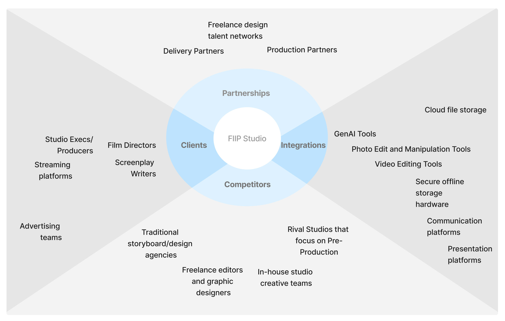

Gen-AI Service Blueprint for Film Pre-Production
Sample Images used in Case Study are for representative purposes only.
 •
•
Client: Fix It In Post Studios
•
Service Blueprints using FigJam, Adobe Suite
•
•
Client: Fix It In Post Studios
•
Service Blueprints using FigJam, Adobe Suite
Summary: Case Study detailing the Service Design of a Gen-AI-assisted Film Pre-Production workflow for Fix It In Post Studios, presented to studio directors.

Project Context
Problem Definition and Goals
As part of the Studio's Pre-Production support services for Film directors (including other services I created like online pitch deck microsites such as this), I led the development of a scalable, AI-assisted pitch video workflow. The goal: make pitching story concepts to producers easy, fast, and visually clear for directors; directly linking creative steps with sharable, impactful outputs.
Traditionally, Indian film concept videos are developed iteratively with evolving concepts, unclear end goals, and numerous client revisions which prolong delivery timelines.
If a concept video for an Indian movie/tv show/creative IP was made, it would have been likely done in the following manner:

What We Did
1. Ecosystem Mapping
Mapped all stakeholders, systems, and touchpoints to understand the complexity and interrelationships of the pitch video service environment.
2. Initial Concept Development
Started with a small idea for the workflow, providing a baseline for iterative exploration rather than a fixed upfront design.
3. Real-Time Client Collaboration
Developed the workflow alongside the client in real-time, observing challenges and adjusting processes immediately.
4. Iterative Service Blueprinting
Continuously refined a service blueprint based on live testing and feedback, documenting workflows, roles, and handoffs.
5. Role Clarification and Task Definition
Defined clear responsibilities for directors, editors, designers, and coordinators to ensure alignment and understanding of deliverables.
6. Establishing Transparent Processes
Made handoffs, export conventions, and feedback loops explicit to improve team alignment, efficiency, and quality control.
7. Validation through Observational Studies
Used observational research and team feedback to identify bottlenecks and adjust the workflow as needed.
8. Finalizing a Flexible Blueprint
Delivered a tested, adaptable service blueprint balancing creative freedom with operational discipline, reusable for future projects.
Design Process
Ecosystem Map

Logical Service Flow

Sample Flow
Director + Editor: Select visual references and define tone/pacing.

PM/Design Team Lead: Defined work roles and assignments for designers between asset breakdown and sketching/generation.

Designers: Sketch Artist make the characters and Graphic Designers generate backgrounds/foreground elements using Gen-AI, including physical objects, non-diegetic light sources, and environmental effects and phenomena.


Design team Lead: Composits various passes to assess Quality, then provides Export organized, ready-to-animate file sets to the editor.


Service Blueprint
This image represents the initial service blueprint I developed for the AI-assisted video production workflow. It was created following extensive testing with both test users and varied employees at our various internal departments, and was finalized based on insights gathered during a real-time client project.
The process depicted here has been rigorously validated over a 2.5-month period through research, observational studies, and collaborative feedback sessions. Since its formal adoption, the workflow continues to be used in practice with minor changes due to evolving software integrations, tech updates, and niche requirements encountered during projects.
This blueprint therefore reflects a thoroughly tested, real-world process. It provides a stable foundation while remaining flexible enough to accommodate the dynamic needs of current/future projects.